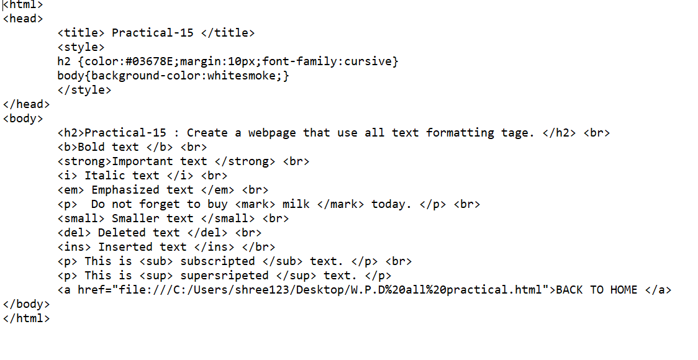

Practical-15 : Create a webpage that use all text formatting tage.

OUTPUT :
Bold text
Important text
Italic text
Emphasized text
Do not forget to buy milk today.
Smaller text
Deleted text
Inserted text
This is subscripted text.
This is supersripeted text.
BACK TO HOME